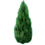
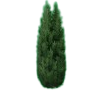
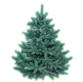
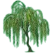

Fák
Cseresznye (Prunus avium): Főként az öntermékeny és roppanós húsú fajtákat (pl. Germersdorfi, Stella, Bigarreau Burlat) keresik a vásárlók.
Kajszibarack (Prunus armeniaca): A házi kertek egyik legkeresettebb gyümölcsfája (különösen a Magyar kajszi és a későbbi virágzású, fagyállóbb fajták).
Almafa (Malus domestica): A legklasszikusabb és legmegbízhatóbb hazai gyümölcsfa, amelyet szinte minden kertben megtalálni. Különösen a varasodásnak ellenálló (rezisztens) és jól tárolható téli fajtákat (pl. Gála, Idared, Pinova, Jonagold), valamint a kis helyet foglaló oszlopos almafákat keresik leginkább a faiskolákban.

Smaragd tuja (Thuja occidentalis 'Smaragd'): Annak ellenére, hogy érzékenyebb a szárazságra, a sövénynek szánt örökzöldek között továbbra is alapdarab.

Leyland-ciprus (Cupressocyparis leylandii): Rendkívül gyors növekedése miatt a legnépszerűbb választás magas, zárt térelválasztó sövények kialakításához.

Ezüstfenyő (Picea pungens 'Glauca'): Kékes-ezüstös tűlevelei miatt kedvelt szoliter fenyő, amely jól bírja a szárazabb levegőt is.
Gömbjuhar (Acer platanoides 'Globosum'): Kisebb kertek és utcafrontok egyik legnépszerűbb fája, metszés nélkül is szabályos, tömött gömb koronát nevel.

Vérlevelű juhar (Acer platanoides 'Royal Red' vagy 'Crimson King'): Sötétbordó lombjával erőteljes színfoltot ad a kertnek tavasztól őszig.
Japán díszcseresznye (Prunus serrulata 'Kanzan'): Tavasszal dús, telt, rózsaszín virágzuhataggal díszít, az egyik legkeresettebb virágzó díszfa.

Vérszilva (Prunus cerasifera 'Nigra'): Korán nyíló halvány rózsaszín virágai és sötétlila levelei miatt rendkívül kedvelt, igénytelen fajta.
Gömb szivarfa (Catalpa bignonioides 'Nana'): Nagy, szív alakú levelei egzotikus hatást keltenek, kompakt mérete miatt előkertekbe ideális.
Selyemakác (Albizia julibrissin): Mediterrán hangulatot árasztó, ernyős koronájú fa, amely nyár közepétől hozza rózsaszín, pamacsszerű virágait.
Liliomfa / Magnólia (Magnolia x soulangeana): Kora tavasszal, még lombfakadás előtt nyíló hatalmas, kehely alakú virágai miatt minden faiskola slágerterméke.
Ezüst hárs (Tilia tomentosa): Kiváló szárazság- és várostűrő képességű, illatos virágú árnyékadó fa, amelyet nagyobb kertekbe és parkokba visznek.

Szomorú fűz (Salix babylonica): Vízpartok közelébe vagy tágas kertekbe keresett, gyors növekedésű, lecsüngő ágrendszerű fa.